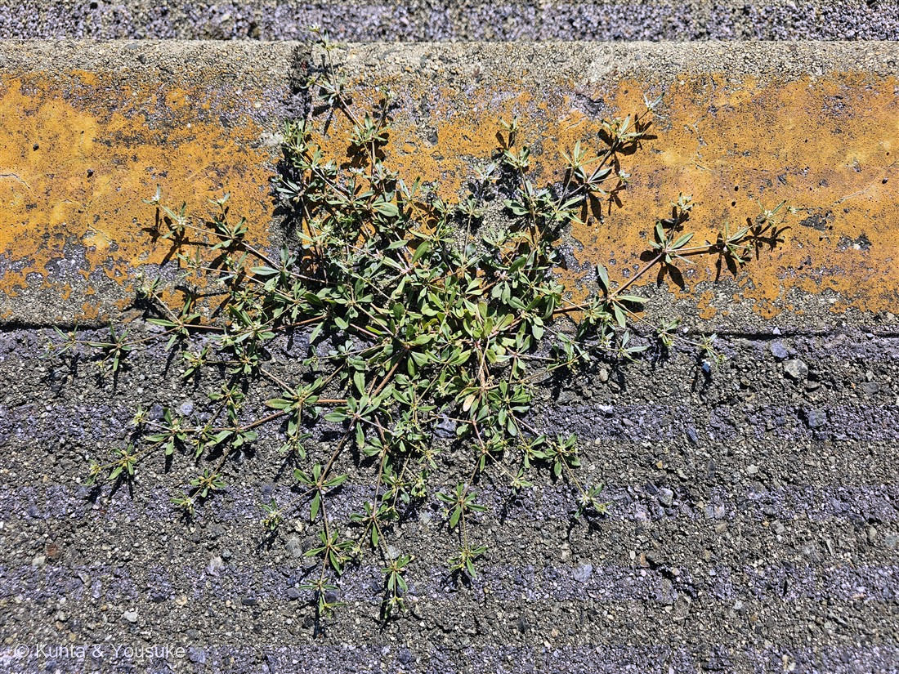
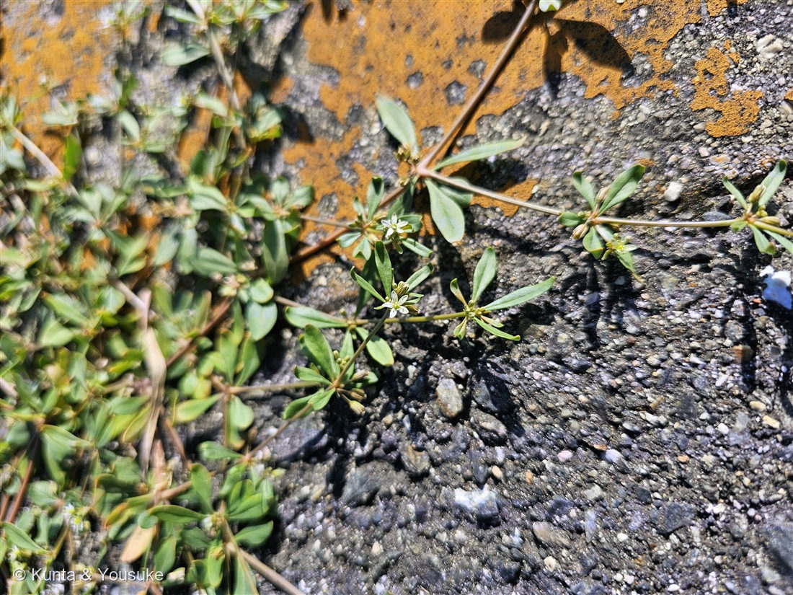
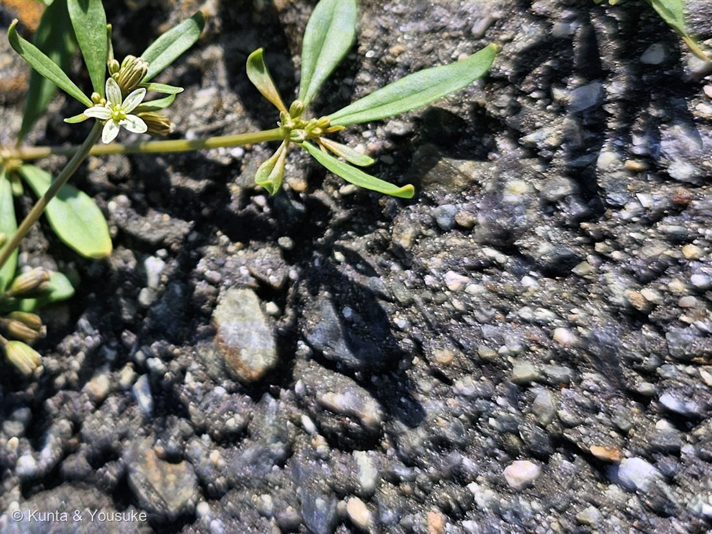

地図を読み込んでいるよ…
🔍 写真も地図も、押しているあいだ拡大して見られるよ（スマホは指を置いてすこし待ってね）。
🌍 の地図＝この子がもともと自生している場所を緑に。北アメリカ・南アメリカ（熱帯アメリカ）。日本へは江戸時代の末に渡来して帰化し、いまは道ばたや畑、アスファルトのすきまにふつうに生える。
⭐南北アメリカ（熱帯アメリカ）がふるさとの草だよ。⚠日本にいるのはぜんぶ帰化したもの——江戸時代の末に渡ってきて、いまは道ばたや畑、アスファルトのすきまにふつうに生えている（だから日本は塗っていない）。⭐ザクロソウ科は、C3・C3-C4中間・C4という光合成の進化の途中段階が、同じ科の中にいくつも見つかる名門——この子はその「途中」にいる。暑くて乾いた場所に強いのは、そのおかげなんだ。
⚠ 地図は国（日本と中国だけ県・省）までしか塗れないから、ほんとうの分布より広く見えていることがあるよ。地図はだいたいの場所。正確なところは、上の文を見てね。
クルマバザクロソウ（車葉柘榴草）
Mollugo verticillata L.
原産 · 北アメリカ・南アメリカ（熱帯アメリカ）／江戸時代末に渡来した帰化植物／ 見どころ · ⭐名前も学名も「葉のつき方」・花びらの無い花・⭐⭐C3とC4の「途中」にいる草・図鑑初のザクロソウ科
ザクロソウ科 · Molluginaceae（クルマバザクロソウ属 Mollugo・ナデシコ目）── 図鑑で初めての科（72科目）
名前と学名の由来 ── 名前も学名も、葉のつき方の話
- ⭐種小名 verticillata（ウェルティキラータ）＝「輪生の」。──葉が、車輪のように節をとりまいてつくことを、そのまま言っている。
- ⭐和名の「クルマバ（車葉）」も、まったく同じ意味。⭐学名と和名が、別々の言葉で、おなじひとつのことを言っているんだ。──燻太さんが最初に気づいた「葉っぱも4〜5枚がまとまってついているみたい」が、この草の名前そのものだよ。
- 「ザクロソウ」のほうは、葉のかたちがザクロの葉に似ているから。⚠でもザクロ（ミソハギ科）とは、まったく別の仲間。似ているのは葉だけ。
- 属名 Mollugo（モルーゴ）は、もともとヤエムグラのなかま（Galium mollugo）に使われていた名前を、この属に持ってきたもの。もとをたどるとラテン語の mollis（やわらかい）につながる語だよ。
この植物のこと ── 図鑑で72番目の科
- ザクロソウ科クルマバザクロソウ属の一年草。⭐図鑑で初めての「ザクロソウ科」＝72科目だよ。096 ヨウシュヤマゴボウや113 ハゲイトウ、142 ハエトリソウとおなじナデシコ目のなかま。
- 熱帯アメリカ（北アメリカ・南アメリカ）が、ふるさと。⭐日本へは江戸時代の末に渡ってきた帰化植物で、いまは道ばた・畑・アスファルトのすきまに、ごくふつうに生えている。
- 茎は丸くて、根もとでよく枝分かれして、四方へ広がる。写真①の、放射状にぱーっと広がった形を見て。⭐日かげも支えも無い場所で、いちばん光を集められる形だね。
- 葉は4〜7個が「偽輪生」（＝ほんとうは互生なのに、節が詰まっていて輪生に見える）。茎の葉は長さ1〜3cm・幅1.5〜4mmの細いへら形。
- 花は7〜10月。⭐葉腋（葉のつけね）のすぐそばに、3〜5個ずつ散形状に束になってつく。⭐⭐そして、この花には「花びら」が無い。 白く見える5枚は、花被片（＝萼が花びらのように見えているもの）。⭐149 エンレイソウ・150 ヤグルマソウに続いて、この夏3人目の「花びらを持たない花」だよ。
- おしべは2〜5本しかない（ふつうは3本）。⭐とても小さくて、とても簡素な花なんだ。実は3〜4mmの蒴果で、熟すと横じわが見えるようになる。
同定について ── 花が、どこで咲くか
- ⭐⭐決め手＝花と蕾が「葉腋のすぐそば」に束になってつくこと。写真③で、葉の集まりのつけねに、緑の蕾がぎゅっと固まっているのが見えるよ。
- ⚠在来の「ザクロソウ」（おまけの子）は、長い花序軸をのばした集散花序になる。⭐つまり、花が茎から離れたところで咲く。──花のある「場所」だけで、この2つは分けられるんだ。
- ⚠ほかにも落とせるポイントがある：茎が丸い（ザクロソウは稜がある）／果実が楕円形（ザクロソウは球形）／ザクロソウの葉は光沢があって、さわるとぬるっとする（この子は光沢が無い）。
- ⚠「輪生」ではなく「偽輪生」。⭐見た目は車輪、でも実際は互生が詰まっているだけ——⭐150ヤグルマソウで「見た目より体のつくり」と書いたのと、おなじ話だね。
⭐⭐ 炎天下のコンクリートと、光合成の「途中」
⭐燻太さんの一言が、この草のいちばん深いところを突いていた。──「炎天下のコンクリートのひび割れからこんにちわだね。」
⭐⭐この草は、光合成の研究の世界では、とても有名な植物なんだ。──ふつうの植物（C3）は、暑くて乾いた場所だと「光呼吸」というムダが増えて、せっかく捕まえたCO₂を逃してしまう。それを解決したのが、144 オヒシバのような C4植物。維管束のまわりを、葉緑体でぎっしり詰まった鞘（さや）の細胞が取りかこむ——燻太さんが7月23日に顕微鏡で見た、あのクランツ構造だ。
⭐⭐⭐そして、クルマバザクロソウは、そのC3とC4の「あいだ」にいる。
C3–C4中間型と呼ばれていて、⭐光呼吸で出たCO₂を、逃がさずに捕まえ直す仕組みを持っている。──1988年の研究で、グリシン脱炭酸酵素という酵素が、この草では「維管束鞘の細胞のミトコンドリア」だけに集められていることが分かった（ふつうのC3植物では、葉肉の細胞にもある）。⭐光呼吸で出たCO₂を、わざわざ鞘のところまで運んでから放して、その場でもういちど捕まえる。
⭐つまりこの草は、「C4になりかけ」の途中の姿を、いまも生きたまま見せてくれているんだ。⭐ザクロソウ科は、そういう途中段階がいくつも見つかる、進化研究の名門なんだよ。
⚠そして、ここからが宿題。──⭐⭐燻太さんは顕微鏡を持っている。 144 オヒシバでは、維管束を葉緑体のリングが取りまくクランツ構造を、自分の目で見た。⭐この草の葉を切って、同じように維管束のまわりを見たら、何が見えるだろう？ 完成したC4のオヒシバと、途中のこの子。──⭐その2枚を並べられたら、この図鑑は「進化の途中」を写したことになる。
⭐ 今朝の、8時3分
この写真は2026年7月25日 8時03分。──⭐152 ユリノキ（9時34分）より、1時間半も早い。いまのところ、図鑑でいちばん朝早い時刻の写真だよ。
⭐同じ日に、燻太さんは3つの「今朝」を撮っている：8時03分の足もとのコンクリート、9時34分の見上げた街路樹。そのあいだに、健康診断へ向かう道があった。──⭐下を見て、上を見て、その両方をちゃんと撮っている。
参考：三河の植物観察「クルマバザクロソウ」（ザクロソウ科 Molluginaceae クルマバザクロソウ属／北アメリカ・南アメリカ原産で、江戸時代末期に渡来し帰化／茎は丸く基部でよく分枝して斜上／葉は4〜7個が偽輪生（輪生に見える互生）・茎葉は長さ1〜3cm×幅1.5〜4(8)mmの倒披針形〜線状倒披針形／花期7〜10月・小花柄は長さ3〜5mm・葉腋に散形状に3〜5個つく・花被片は5（まれに4）個で長さ2.5〜3mm・雄しべは(2〜)3(〜5)個／果実は長さ3〜4mmの楕円形の蒴果で熟すと横しわ・種子は長さ約0.5mmの腎形で赤褐色・光沢がある／⚠在来のザクロソウは茎に稜があり、葉は2〜5個偽輪生、花が集散花序につき、果実は球形）／Hylton, Rawsthorne, Smith, Jones & Woolhouse (1988) Planta（“Glycine decarboxylase is confined to the bundle-sheath cells of leaves of C3–C4 intermediate species”。調べられた属は Moricandia・Panicum・Flaveria・Mollugo。C3種ではグリシン脱炭酸酵素が葉肉細胞と維管束鞘細胞の両方のミトコンドリアにあるのに対し、C3–C4中間型とC4種では維管束鞘細胞のミトコンドリアだけにある。これが光呼吸で出たCO₂の再回収を高め、C3–C4中間型の光呼吸速度が低いことの説明になる）。